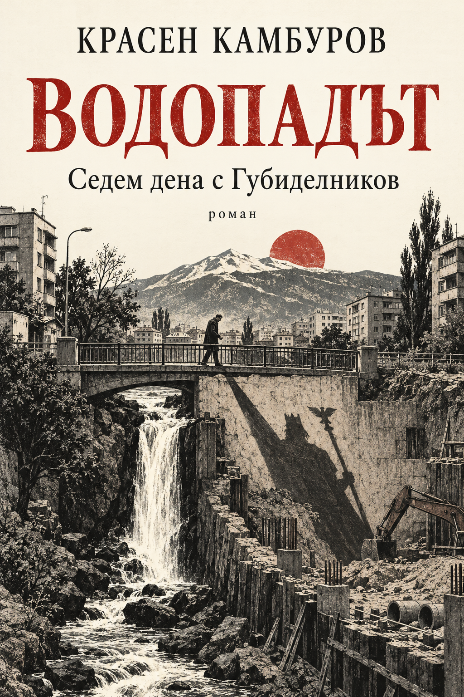
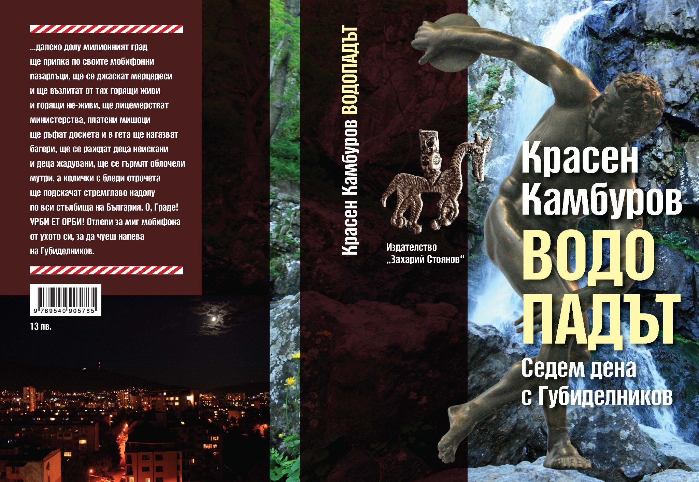

Роман · 2011 · Красен Камбуров
Водопадът
Седем дена с Губиделников
Един български владетел възкръсва в съвременна София. Неговият втори живот се превръща в изпитание за обществото и за самия него.
Второ издание; първо електронно издание · София, 2026 · PDF и EPUB.

За романа
Седем дена с Губиделников
На софийска улица е открит неизвестен некропол на българските владетели. Един от тях възкръсва и се оттегля в околностите на столицата. Необяснимото събитие разтърсва държавата: институции и граждани се разделят в отношението си към възкресението.
В повествованието митът среща съвременността, а иронията и сарказмът се редуват с лирични и философски откровения. В центъра остава въпросът как възкръсналият владетел ще понесе света, в който се е завърнал.
Представяне по авторската анотация към романа.
Свободно четене · PDF / EPUB
Водопадът в PDF и EPUB
Първото електронно издание с новата корица „Митът в града“ е достъпно безплатно в PDF и EPUB. Първо печатно издание: 2011 г.
PDF: ISBN 978-619-94259-4-7
EPUB: ISBN 978-619-94259-5-4
Печатното издание
Оригиналната корица


Още от Красен Камбуров
Към всички книги ↗